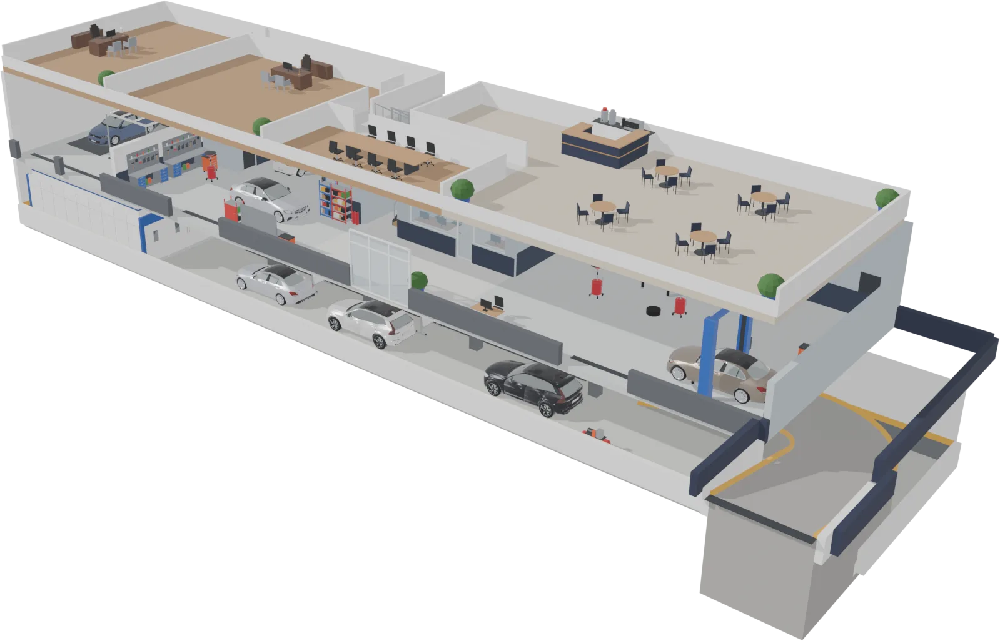

Tesisimiz
Şaşmaz Oto Sanayi Sitesi'ndeki binamız: üç kat, altı bölüm. Aşağı kaydırın, cephe açılsın.
Binayı gezRandevu al
Şaşmaz Oto Sanayi Sitesi'ndeki binamız: üç kat, altı bölüm. Aşağı kaydırın, cephe açılsın.

Sürükleyip döndürün. Bir bölüme tıklayın.

Ana kat · Mekanik 1 + 2
İki atölye: Mekanik 1 ve Mekanik 2. Bakımdan motor onarımına.

Mekanik içinde
Arıza tespiti, yazılım, aydınlatma, şarj sistemi.